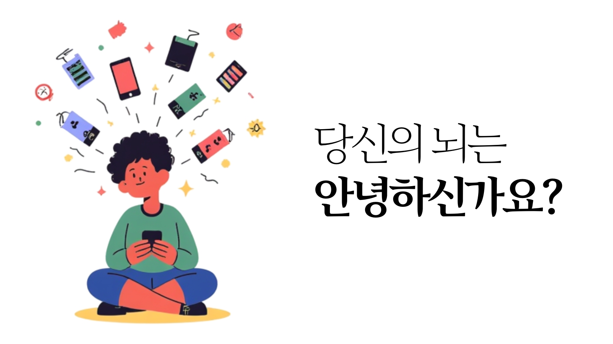

유튜브 보면서 게임하는 당신,
뇌는 지금 '비명'을 지르고 있다?
혹시 지금 이 글을 읽으면서도 화면 한구석에 유튜브를 틀어놓으셨나요? 혹은 메신저 알림이 올 때마다 즉각적으로 창을 옮겨 다니고 계신가요? 현대인들에게 '멀티태스킹'은 일상이자 효율성의 상징처럼 여겨집니다. 하지만 뇌과학의 관점에서 볼 때, 멀티태스킹은 효율의 극대화가 아니라 '뇌의 자살 행위'에 가깝습니다.

1. 왜 멀티태스킹은 '가짜 효율'일까?
우리의 뇌는 사실 '동시 처리'가 불가능한 구조입니다. 컴퓨터의 듀얼 코어처럼 작동하는 것이 아니라, 아주 빠른 속도로 **'주의력 채널'을 전환**할 뿐이죠. 유튜브를 보다가 게임 화면으로 시선을 옮기는 순간, 우리 뇌는 이전 작업의 맥락을 끊고 새로운 작업의 데이터를 로딩해야 합니다.
심리학에서는 이를 '스위칭 비용(Switching Cost)'이라고 부릅니다. 이 채널 전환이 반복될 때마다 뇌는 막대한 에너지를 소모하며, 작업 속도는 최대 40%까지 느려집니다. 겉으로는 바쁘고 생산적으로 보이지만, 실제로는 어떤 일도 제대로 끝내지 못하는 '인지적 과부하' 상태에 빠지는 것입니다.
2. 당신의 뇌를 망치는 '도파민의 함정'
문제는 우리가 이 과정에서 묘한 즐거움을 느낀다는 것입니다. 새로운 알림, 새로운 영상 조각이 나타날 때마다 뇌는 미량의 도파민을 분출합니다. 뇌는 '중요한 일을 하고 있다'는 착각에 빠져 더 자극적인 멀티태스킹 환경을 원하게 됩니다.
이런 습관이 지속되면 뇌의 전두엽 기능이 약화됩니다. 깊은 통찰이나 복잡한 문제를 인내심 있게 해결하는 능력은 사라지고, 자극에만 즉각 반응하는 '수동적인 뇌'로 변하는 것이죠. 스탠퍼드 대학교의 연구에 따르면, 멀티태스킹을 자주 하는 사람일수록 오히려 관련 없는 정보에 더 쉽게 산만해지며 인지적 통제력을 잃는 것으로 나타났습니다.
3. 해결책: '싱글 태스킹'의 가치 회복
무너진 집중력을 되살리는 방법은 단순하지만 강력합니다. 바로 한 번에 한 가지 일만 하는 **'싱글 태스킹(Single Tasking)'**을 연습하는 것입니다. 하루 중 단 30분만이라도 모든 알림을 끄고 하나의 과제에만 깊이 몰입해보세요. 파편화되었던 뇌 회로가 다시 정돈되는 느낌을 받을 수 있을 것입니다.
단순히 참는 것만으로는 부족합니다. 뇌에게 '집중하는 즐거움'을 다시 가르쳐야 합니다. 자극적인 숏폼 영상 대신, 전략적 사고가 필요한 문제를 풀거나 고도의 주의력을 요구하는 훈련을 통해 뇌의 '억제 제어 기능'을 다시 활성화시켜야 합니다.
💡 산만한 뇌를 정돈하고 싶다면?
여러분의 뇌는 지금 얼마나 산만한가요? 글자와 그림의 간섭을 이겨내는 훈련을 통해, '주의력 전환' 능력을 올바르게 제어하는 힘을 길러보세요.
🎯 집중력 컨트롤 훈련 시작하기📚 데이터 출처 및 참고 문헌
- University of London (2014). "Multitasking damages your IQ and your brain."
- Stanford University (2009). "Cognitive control in media multitaskers." PNAS.
- Gloria Mark (2023). Attention Span. 집중력의 한계와 회복에 관한 실증적 연구.
- Nicholas Carr (2010). The Shallows. 멀티태스킹이 신경 가소성에 미치는 영향.